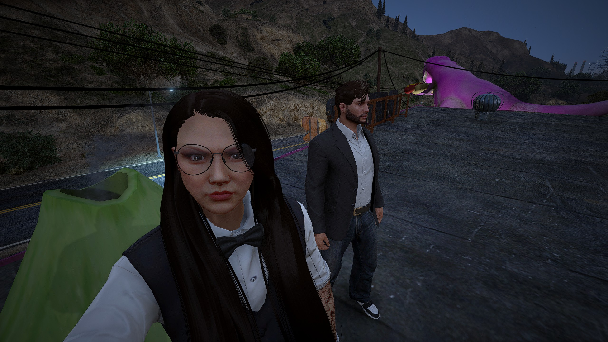
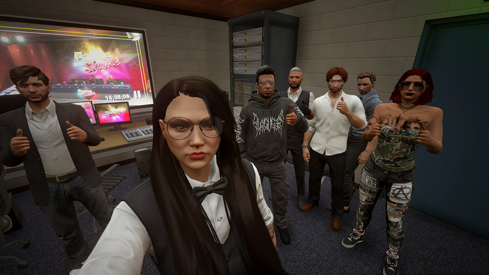

Das Führungsteam
Assistant Chief of San Andreas Fire and Medical Services
Dr. Noah Rogers
Leitung des San Andreas Fire and Medical Services
Captain of
SAFR

Marshall Pembroke
Verantwortlich für die Verwaltung des San Andreas Fire and Rescue.
Head of Department SAMS

Dr. Jane Mei
Verantwortlich für die Verwaltung des San Andreas Medical Service.